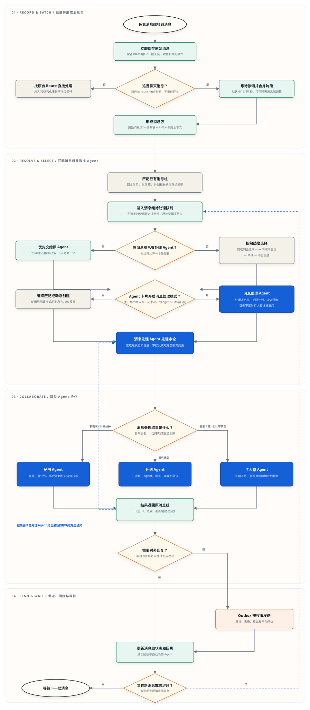

任意消息端
群聊、私聊、语音、邮件或其它自然语言入口。
主人格、秘书和一计划一 Agent 全部保留，新增专职消息处理 Agent。聊天消息先记录，再等待一句话说完并自动形成消息组；ASR 和结构化事件照常直接投递。每张 Agent 卡片只决定是否参与消息处理调度。
消息组保存待处理队列和短工作状态。调度器优先复用处理过原消息组、同端同会话同人、同端同会话或同端的消息处理 Agent。
群聊、私聊、语音、邮件或其它自然语言入口。
接收事件，也负责最终调用平台发送接口。
保留 messageId、回复链、附件和平台原始事件。
聊天消息自动归组；ASR 和结构化事件按原有 Route 直接处理。
只处理自然语言片段，不阻塞新消息记录。
当前片段、回复链、最近消息、消息组摘要和计划摘要。
先看回复链和 ID，再检索少量消息组摘要。
每组独立保存完整消息包，忙碌时只追加。
原消息组 → 同端同会话同人 → 同端同会话 → 同端。
Agent 卡片开启消息处理模式后，才能被选择或动态创建。
活跃、等待和历史消息组都可检索，不按时间直接排除。
结论、待处理、计划、最后回复和处理游标。
混合检索，必要时扩大范围、过滤和分页。
标题、别名、来源消息、步骤、进展和归档计划。
新需求查重、建计划、维护计划并安排计划 Agent。
一计划一 Agent，负责真正执行、调查和验证。
重要对话、跨计划判断、冲突和无法可靠判断的事项。
消息处理 Agent 决定是否通知、等待或形成草稿。
允许自动发送，或者先生成待确认草稿。
负责防重复、重试、发送状态和回执关联。
真正调用 QQ、微信或飞书的发送接口。
已发送、最终失败、messageId 和重试记录。
使用标准流程图符号：椭圆是开始或结束，矩形是处理步骤，菱形是判断。蓝色步骤需要 Agent 理解语义。

实线表示当前处理路径；蓝色虚线表示计划进展或队列新增内容触发下一轮处理。手机上可横向滑动查看完整图。
聊天消息默认使用消息组，只需按具体聊天节奏调整等待时间；ASR 和结构化事件不增加等待。
命令、审批、按钮、心跳、告警、结构化事件和已经完成切句的 ASR 文本。
私聊、群内明确 @ 和明确回复。保留停顿，但响应速度更快。
普通群聊自然语言消息，为图片说明和连续半句话多留一点时间。
消息端卡片开启消息组；Agent 卡片开启消息处理 Agent 模式。
Codex 消息处理 Agent 的新轮次独立使用 GPT-5.6 Luna，不改变主人格、秘书和计划 Agent。
四类 Agent 都只生成结果或回复请求。发送成功只更新状态；失败、需要继续处理或对方又回复时，才把新情况交回原消息组。
判断是否需要回复、写回复内容、关联已有计划、识别新需求，以及处理复杂讨论。
检查自动发送权限、保存草稿、调用平台适配器、去重、重试并保存发送回执。
| 发送结果 | RabiRoute 动作 | 是否启动消息处理 Agent |
|---|---|---|
| 发送成功，不需要继续处理 | 把 messageId 和回执写入消息组状态 | 否，只更新状态 |
| 发送成功，但该组又有新消息 | 回执和新消息一起进入原消息组队列 | 是，由调度器启动下一轮 |
| 自动重试后仍然失败 | 停止自动重试，保存最终失败原因 | 需要语义判断时才启动 |
| 对方回复已发送的消息 | 根据 Outbox messageId 找回原消息组 | 是，形成完整消息包后按队列调度 |